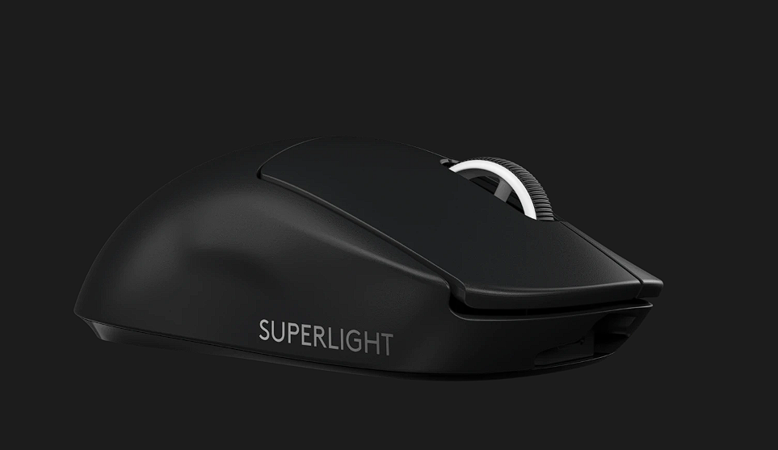
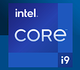

Blog
Logitech G Pro X Superlight Wireless Gaming Mouse

Singkirkan semua rintangan dari jalan menuju kemenangan dengan mouse PRO yang paling ringan dan paling cepat ini. Senjata pilihan terbaru untuk para atlet profesional esport terbaik, dengan berat kurang dari 63 gram dan menghadirkan glide yang nyaris tanpa friksi. PRO X SUPERLIGHT melanjutkan filosofi desain, yaitu TANPA LAWAN. Komitmen untuk menyingkirkan semua rintangan dalam menciptakan koneksi yang semurni mungkin antara pemain dan game.
Baca Selengkapnya
Keyboard Ajazz AK820 Pro

Keyboard mechanical 75% ini dilengkapi dengan Layar TFT, berfungsi sebagai antarmuka interaktif Anda untuk pembaruan dan penyesuaian waktu nyata. Layar definisi tinggi memungkinkan visual yang dapat disesuaikan, status baterai, tampilan tanggal & waktu, konektivitas & tampilan OS, dan efek lampu latar. Dengan rincian fitur Layar TFT ini, Anda dapat dengan mudah memahami berbagai kemampuannya dan mengapa Ajazz AK820 Pro lebih unggul dibandingkan keyboard lain di pasaran.
Baca Selengkapnya
Prosesor Intel® Core™ i9

Prosesor ini menghadirkan arsitektur hibrida performa yang dirancang untuk performa cerdas, kreasi yang dioptimalkan, dan penyetelan yang disempurnakan untuk memungkinkan gamer bermain game dengan kecepatan clock hingga 6,0 GHz.
Baca Selengkapnya